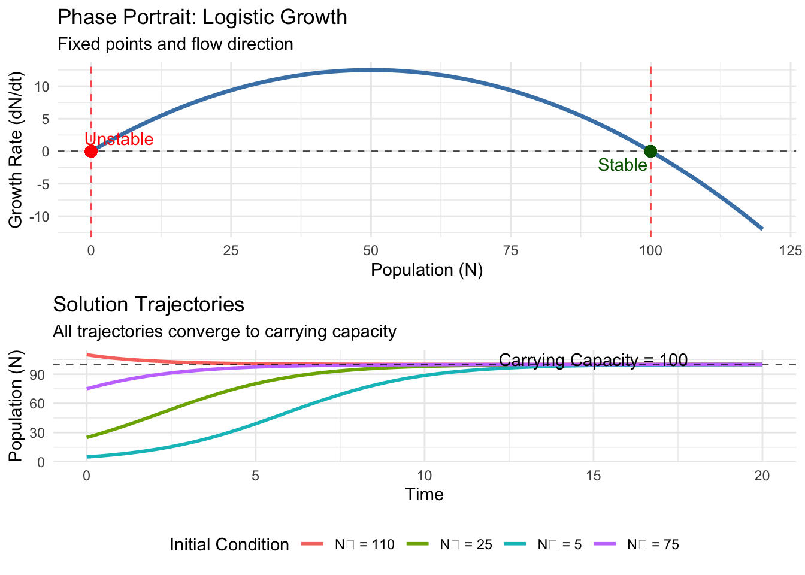
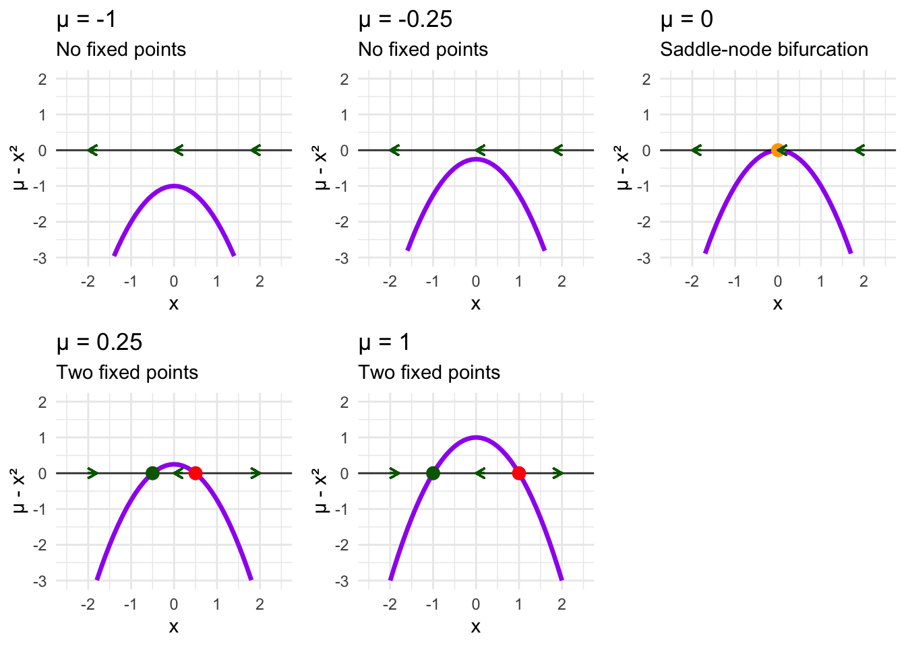
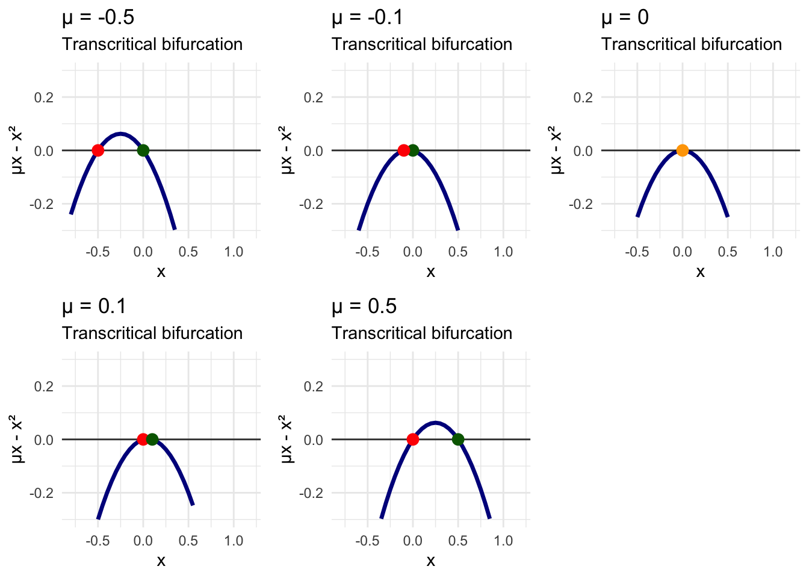

Chapter 5 The Phase Line of One-Dimensional Dynamics: A Healthcare Perspective
You’re managing patient capacity in an emergency department. At low admission rates, the system hums smoothly—patients flow through triage, treatment, and discharge in a stable rhythm. Increase admissions slightly, and suddenly two patterns emerge: one where the department maintains efficiency, another where it descends into gridlock. Push admissions higher still, and something remarkable happens: both stable states vanish, leaving only chaotic oscillations between overcrowding and brief respites.
This isn’t a nightmare scenario—it’s the everyday reality of nonlinear healthcare systems undergoing bifurcations. Where our previous exploration revealed the rich dynamics possible within single parameter regimes, today we venture into the more fascinating territory of how these dynamics transform as system parameters change.
The phase line becomes our primary tool for this investigation. Unlike static snapshots of behavior at fixed parameters, phase line analysis reveals the complete evolutionary story of a dynamical system as conditions change. We’ll discover how stable and unstable states appear, collide, and disappear through mathematical catastrophes called bifurcations.
5.1 The Geometry of Flow
Before diving into parameter-dependent behavior, we need to sharpen our visualization tools. For any one-dimensional system \(\dot{x} = f(x)\), the phase line provides a complete geometric picture of all possible dynamics.
Consider a model of disease transmission in a closed population:
\[\dot{x} = x^2 - 1\]
where \(x\) represents the deviation from baseline infection rate. Rather than immediately solving this algebraically, let’s understand it geometrically. The phase line is constructed by plotting the function \(f(x) = x^2 - 1\) and examining where it crosses the x-axis (our equilibrium states) and whether it lies above or below the axis (determining flow direction).
## Loading required package: viridisLite# Define the function f(x) = x^2 - 1
f <- function(x) x^2 - 1
# Create phase line data
x_vals <- seq(-3, 3, by = 0.1)
fx_vals <- f(x_vals)
phase_data <- data.frame(
x = x_vals,
fx = fx_vals
)
# Find fixed points
fixed_points <- c(-1, 1)
# Create phase line plot
phase_line_plot <- ggplot(phase_data, aes(x = x, y = fx)) +
geom_line(color = "steelblue", linewidth = 1.5) +
geom_hline(yintercept = 0, linetype = "solid", alpha = 0.8, linewidth = 0.8) +
geom_vline(xintercept = fixed_points, linetype = "dashed", alpha = 0.6, color = "red") +
geom_point(data = data.frame(x = fixed_points, fx = c(0, 0)),
aes(x = x, y = fx), color = "red", size = 3) +
geom_segment(aes(x = -2.5, y = 0, xend = -2.3, yend = 0),
arrow = arrow(length = unit(0.3, "cm")), color = "darkgreen", linewidth = 1.2) +
geom_segment(aes(x = 0, y = 0, xend = -0.2, yend = 0),
arrow = arrow(length = unit(0.3, "cm")), color = "darkgreen", linewidth = 1.2) +
geom_segment(aes(x = 2.3, y = 0, xend = 2.5, yend = 0),
arrow = arrow(length = unit(0.3, "cm")), color = "darkgreen", linewidth = 1.2) +
annotate("text", x = -1, y = 0.3, label = "Stable", color = "darkgreen", size = 4) +
annotate("text", x = 1, y = 0.3, label = "Unstable", color = "red", size = 4) +
annotate("rect", xmin = -3, xmax = -1, ymin = -0.1, ymax = 0.1,
alpha = 0.2, fill = "blue") +
annotate("rect", xmin = -1, xmax = 1, ymin = -0.1, ymax = 0.1,
alpha = 0.2, fill = "red") +
annotate("rect", xmin = 1, xmax = 3, ymin = -0.1, ymax = 0.1,
alpha = 0.2, fill = "blue") +
labs(
title = "Phase Line Analysis: x² - 1",
x = "Infection Rate Deviation (x)",
y = "f(x) = x² - 1",
subtitle = "Equilibrium states and flow direction revealed geometrically"
) +
theme_minimal() +
theme(panel.grid.minor = element_blank()) +
ylim(-2, 6)
print(phase_line_plot)## Warning in geom_segment(aes(x = -2.5, y = 0, xend = -2.3, yend = 0), arrow = arrow(length = unit(0.3, : All aesthetics have length 1, but the data has 61 rows.
## ℹ Please consider using `annotate()` or provide this layer with data containing a single row.## Warning in geom_segment(aes(x = 0, y = 0, xend = -0.2, yend = 0), arrow = arrow(length = unit(0.3, : All aesthetics have length 1, but the data has 61 rows.
## ℹ Please consider using `annotate()` or provide this layer with data containing a single row.## Warning in geom_segment(aes(x = 2.3, y = 0, xend = 2.5, yend = 0), arrow = arrow(length = unit(0.3, : All aesthetics have length 1, but the data has 61 rows.
## ℹ Please consider using `annotate()` or provide this layer with data containing a single row.## Warning: Removed 8 rows containing missing values or values outside the scale range (`geom_line()`).
The phase line immediately reveals the system’s complete behavior. Where \(f(x) > 0\) (above the x-axis), we have \(\dot{x} > 0\), so infection rates increase—flow moves rightward. Where \(f(x) < 0\) (below the x-axis), we have \(\dot{x} < 0\), so infection rates decrease—flow moves leftward.
The fixed points at \(x = -1\) and \(x = 1\) exhibit different stability. The point at \(x = -1\) is stable—any small perturbation decays back. The point at \(x = 1\) is unstable—perturbations grow. Initial conditions in \((-\infty, -1)\) flow leftward toward \(x = -1\). Conditions in \((1, \infty)\) flow rightward toward infinity. In the interval \((-1, 1)\), all trajectories flow leftward toward \(x = -1\).
This geometric approach transforms the abstract differential equation into a vivid landscape of attraction and repulsion. We can immediately identify basins of attraction, understand long-term behavior, and predict system response to interventions—all without solving a single integral.
5.2 The Universal Patterns of Creation and Annihilation
Now we explore how these geometric patterns change as we vary parameters. The most fundamental bifurcations in one-dimensional systems follow universal templates that appear across disciplines, from epidemiology to hospital operations.
5.2.1 The Saddle-Node Bifurcation: Threshold Phenomena
Consider a hospital bed occupancy model:
\[\dot{x} = \mu - x^2\]
where \(x\) represents bed occupancy relative to capacity, and \(\mu\) captures admission pressure. This simple equation contains a profound story about how equilibrium states appear and disappear.
For \(\mu < 0\), we have \(f(x) = \mu - x^2 < 0\) for all \(x\) (since \(x^2 \geq 0\) always). The phase line lies entirely below the x-axis, creating uniform leftward flow with no equilibrium states. Every trajectory heads toward empty beds at \(x = -\infty\).
For \(\mu = 0\), something special happens. The function \(f(x) = -x^2\) touches the x-axis at exactly one point: \(x = 0\). This creates a semi-stable equilibrium—trajectories approach from one side but not the other.
For \(\mu > 0\), two equilibria suddenly appear where \(\mu - x^2 = 0\), giving us \(x = \pm\sqrt{\mu}\). The negative equilibrium \(x = -\sqrt{\mu}\) is stable, while the positive equilibrium \(x = +\sqrt{\mu}\) is unstable.
# Saddle-node bifurcation analysis
mu_values <- c(-1, -0.25, 0, 0.25, 1)
saddle_node_plots <- list()
for (i in seq_along(mu_values)) {
mu <- mu_values[i]
f_sn <- function(x) mu - x^2
x_vals <- seq(-3, 3, by = 0.1)
fx_vals <- f_sn(x_vals)
plot_data <- data.frame(x = x_vals, fx = fx_vals)
# Find fixed points
if (mu < 0) {
fixed_points <- numeric(0)
fp_colors <- character(0)
} else if (mu == 0) {
fixed_points <- 0
fp_colors <- "orange"
} else {
fixed_points <- c(-sqrt(mu), sqrt(mu))
fp_colors <- c("darkgreen", "red")
}
p <- ggplot(plot_data, aes(x = x, y = fx)) +
geom_line(color = "purple", linewidth = 1.2) +
geom_hline(yintercept = 0, linetype = "solid", alpha = 0.8) +
labs(
title = paste("μ =", mu),
x = "Bed Occupancy (x)",
y = "μ - x²",
subtitle = ifelse(mu < 0, "No equilibrium",
ifelse(mu == 0, "Critical threshold",
"Two equilibria"))
) +
theme_minimal() +
ylim(-3, 2) +
xlim(-2.5, 2.5)
if (length(fixed_points) > 0) {
p <- p + geom_point(data = data.frame(x = fixed_points, y = rep(0, length(fixed_points))),
aes(x = x, y = y), color = fp_colors, size = 3)
}
if (mu <= 0) {
p <- p +
geom_segment(aes(x = -1.8, y = 0, xend = -2, yend = 0),
arrow = arrow(length = unit(0.2, "cm")), color = "darkgreen") +
geom_segment(aes(x = 0.2, y = 0, xend = 0, yend = 0),
arrow = arrow(length = unit(0.2, "cm")), color = "darkgreen") +
geom_segment(aes(x = 2, y = 0, xend = 1.8, yend = 0),
arrow = arrow(length = unit(0.2, "cm")), color = "darkgreen")
} else {
p <- p +
geom_segment(aes(x = -2, y = 0, xend = -1.8, yend = 0),
arrow = arrow(length = unit(0.2, "cm")), color = "darkgreen") +
geom_segment(aes(x = 0.2, y = 0, xend = 0, yend = 0),
arrow = arrow(length = unit(0.2, "cm")), color = "darkgreen") +
geom_segment(aes(x = 1.8, y = 0, xend = 2, yend = 0),
arrow = arrow(length = unit(0.2, "cm")), color = "darkgreen")
}
saddle_node_plots[[i]] <- p
}
do.call(grid.arrange, c(saddle_node_plots, ncol = 3))## Warning in geom_segment(aes(x = -1.8, y = 0, xend = -2, yend = 0), arrow = arrow(length = unit(0.2, : All aesthetics have length 1, but the data has 61 rows.
## ℹ Please consider using `annotate()` or provide this layer with data containing a single row.## Warning in geom_segment(aes(x = 0.2, y = 0, xend = 0, yend = 0), arrow = arrow(length = unit(0.2, : All aesthetics have length 1, but the data has 61 rows.
## ℹ Please consider using `annotate()` or provide this layer with data containing a single row.## Warning in geom_segment(aes(x = 2, y = 0, xend = 1.8, yend = 0), arrow = arrow(length = unit(0.2, : All aesthetics have length 1, but the data has 61 rows.
## ℹ Please consider using `annotate()` or provide this layer with data containing a single row.## Warning: Removed 32 rows containing missing values or values outside the scale range (`geom_line()`).## Warning in geom_segment(aes(x = -1.8, y = 0, xend = -2, yend = 0), arrow = arrow(length = unit(0.2, : All aesthetics have length 1, but the data has 61 rows.
## ℹ Please consider using `annotate()` or provide this layer with data containing a single row.## Warning in geom_segment(aes(x = 0.2, y = 0, xend = 0, yend = 0), arrow = arrow(length = unit(0.2, : All aesthetics have length 1, but the data has 61 rows.
## ℹ Please consider using `annotate()` or provide this layer with data containing a single row.## Warning in geom_segment(aes(x = 2, y = 0, xend = 1.8, yend = 0), arrow = arrow(length = unit(0.2, : All aesthetics have length 1, but the data has 61 rows.
## ℹ Please consider using `annotate()` or provide this layer with data containing a single row.## Warning: Removed 28 rows containing missing values or values outside the scale range (`geom_line()`).## Warning in geom_segment(aes(x = -1.8, y = 0, xend = -2, yend = 0), arrow = arrow(length = unit(0.2, : All aesthetics have length 1, but the data has 61 rows.
## ℹ Please consider using `annotate()` or provide this layer with data containing a single row.## Warning in geom_segment(aes(x = 0.2, y = 0, xend = 0, yend = 0), arrow = arrow(length = unit(0.2, : All aesthetics have length 1, but the data has 61 rows.
## ℹ Please consider using `annotate()` or provide this layer with data containing a single row.## Warning in geom_segment(aes(x = 2, y = 0, xend = 1.8, yend = 0), arrow = arrow(length = unit(0.2, : All aesthetics have length 1, but the data has 61 rows.
## ℹ Please consider using `annotate()` or provide this layer with data containing a single row.## Warning: Removed 26 rows containing missing values or values outside the scale range (`geom_line()`).## Warning in geom_segment(aes(x = -2, y = 0, xend = -1.8, yend = 0), arrow = arrow(length = unit(0.2, : All aesthetics have length 1, but the data has 61 rows.
## ℹ Please consider using `annotate()` or provide this layer with data containing a single row.## Warning in geom_segment(aes(x = 0.2, y = 0, xend = 0, yend = 0), arrow = arrow(length = unit(0.2, : All aesthetics have length 1, but the data has 61 rows.
## ℹ Please consider using `annotate()` or provide this layer with data containing a single row.## Warning in geom_segment(aes(x = 1.8, y = 0, xend = 2, yend = 0), arrow = arrow(length = unit(0.2, : All aesthetics have length 1, but the data has 61 rows.
## ℹ Please consider using `annotate()` or provide this layer with data containing a single row.## Warning: Removed 24 rows containing missing values or values outside the scale range (`geom_line()`).## Warning in geom_segment(aes(x = -2, y = 0, xend = -1.8, yend = 0), arrow = arrow(length = unit(0.2, : All aesthetics have length 1, but the data has 61 rows.
## ℹ Please consider using `annotate()` or provide this layer with data containing a single row.## Warning in geom_segment(aes(x = 0.2, y = 0, xend = 0, yend = 0), arrow = arrow(length = unit(0.2, : All aesthetics have length 1, but the data has 61 rows.
## ℹ Please consider using `annotate()` or provide this layer with data containing a single row.## Warning in geom_segment(aes(x = 1.8, y = 0, xend = 2, yend = 0), arrow = arrow(length = unit(0.2, : All aesthetics have length 1, but the data has 61 rows.
## ℹ Please consider using `annotate()` or provide this layer with data containing a single row.## Warning: Removed 20 rows containing missing values or values outside the scale range (`geom_line()`).
This sequence reveals the saddle-node bifurcation—the most common way equilibria appear in dynamical systems. At the critical parameter value \(\mu = 0\), stable and unstable equilibria are born simultaneously, emerging from nothing in a process called a tangent bifurcation.
The saddle-node bifurcation appears throughout healthcare. In emergency departments, it describes the threshold where patient flow suddenly transitions from smooth to gridlocked. In disease dynamics, it models tipping points where infections suddenly take hold. In surgical suites, it explains how scheduling systems abruptly shift from efficient to chaotic when case volume exceeds critical thresholds.
5.2.2 The Pitchfork Bifurcation: Symmetry Breaking
While saddle-node bifurcations create equilibria from nothing, pitchfork bifurcations redistribute stability among existing equilibria, often breaking system symmetry in the process.
Consider a vaccination coverage model:
\[\dot{x} = \mu x - x^3\]
where \(x\) represents population immunity deviation from baseline, and \(\mu\) captures vaccine efficacy. This system always has an equilibrium at \(x = 0\), but its stability and the existence of other equilibria depend critically on \(\mu\).
For \(\mu < 0\), the only equilibrium is \(x = 0\), and it’s stable. We verify this by checking \(f'(0) = \mu < 0\), confirming that small perturbations decay back to baseline.
For \(\mu = 0\), we have \(\dot{x} = -x^3\). The baseline remains the only equilibrium, but its stability becomes marginal. Small perturbations decay as \(x^3\), much slower than exponential decay.
For \(\mu > 0\), everything changes. Setting \(\mu x - x^3 = x(\mu - x^2) = 0\) gives us three equilibria: \(x = 0\), \(x = -\sqrt{\mu}\), and \(x = +\sqrt{\mu}\). The baseline becomes unstable (\(f'(0) = \mu > 0\)), while the two symmetric equilibria \(x = \pm\sqrt{\mu}\) are stable.
# Pitchfork bifurcation analysis
mu_values_pf <- c(-1, -0.1, 0, 0.1, 1)
pitchfork_plots <- list()
for (i in seq_along(mu_values_pf)) {
mu <- mu_values_pf[i]
f_pf <- function(x) mu * x - x^3
x_vals <- seq(-2.5, 2.5, by = 0.1)
fx_vals <- f_pf(x_vals)
plot_data <- data.frame(x = x_vals, fx = fx_vals)
if (mu <= 0) {
fixed_points <- 0
fp_colors <- ifelse(mu < 0, "darkgreen", "orange")
} else {
fixed_points <- c(-sqrt(mu), 0, sqrt(mu))
fp_colors <- c("darkgreen", "red", "darkgreen")
}
p <- ggplot(plot_data, aes(x = x, y = fx)) +
geom_line(color = "darkred", linewidth = 1.2) +
geom_hline(yintercept = 0, linetype = "solid", alpha = 0.8) +
geom_point(data = data.frame(x = fixed_points, y = rep(0, length(fixed_points))),
aes(x = x, y = y), color = fp_colors, size = 3) +
labs(
title = paste("μ =", mu),
x = "Immunity Deviation (x)",
y = "μx - x³",
subtitle = ifelse(mu <= 0, "Single equilibrium", "Three equilibria")
) +
theme_minimal() +
ylim(-2, 2) +
xlim(-2.5, 2.5)
pitchfork_plots[[i]] <- p
}
do.call(grid.arrange, c(pitchfork_plots, ncol = 3))## Warning: Removed 30 rows containing missing values or values outside the scale range (`geom_line()`).## Warning: Removed 26 rows containing missing values or values outside the scale range (`geom_line()`).
## Removed 26 rows containing missing values or values outside the scale range (`geom_line()`).
## Removed 26 rows containing missing values or values outside the scale range (`geom_line()`).## Warning: Removed 20 rows containing missing values or values outside the scale range (`geom_line()`).
The pitchfork bifurcation at \(\mu = 0\) represents a symmetry-breaking transition. For \(\mu < 0\), the system has a unique stable state at baseline. For \(\mu > 0\), this central state becomes unstable, and the system must “choose” between two symmetric alternatives at \(x = \pm\sqrt{\mu}\).
This pattern appears when healthcare systems transition from unique to multiple stable states. In vaccination programs, it describes how populations can suddenly bifurcate into high-coverage and low-coverage subgroups when public health messaging exceeds a threshold. In treatment adherence, it models how patient populations split into compliant and non-compliant groups when intervention intensity crosses critical values.
5.3 The Bifurcation Diagram: Mapping Parameter Space
Individual phase line snapshots reveal system behavior for specific parameter values, but the complete story emerges when we track equilibria across the entire parameter range. The bifurcation diagram provides this global perspective.
For the pitchfork bifurcation \(\dot{x} = \mu x - x^3\), we plot the location of all equilibria as a function of \(\mu\):
# Create bifurcation diagram for pitchfork
mu_range <- seq(-1, 1, by = 0.01)
bifurcation_data <- data.frame()
for (mu in mu_range) {
if (mu <= 0) {
temp_data <- data.frame(
mu = mu,
x_fixed = 0,
stability = "stable"
)
} else {
temp_data <- data.frame(
mu = c(mu, mu, mu),
x_fixed = c(-sqrt(mu), 0, sqrt(mu)),
stability = c("stable", "unstable", "stable")
)
}
bifurcation_data <- rbind(bifurcation_data, temp_data)
}
bifurcation_plot <- ggplot(bifurcation_data, aes(x = mu, y = x_fixed, color = stability)) +
geom_line(aes(group = interaction(x_fixed >= 0, stability)), linewidth = 1.2) +
geom_vline(xintercept = 0, linetype = "dashed", alpha = 0.7) +
scale_color_manual(values = c("stable" = "darkgreen", "unstable" = "red")) +
labs(
title = "Pitchfork Bifurcation Diagram",
x = "Parameter μ",
y = "Equilibrium State",
color = "Stability",
subtitle = "Symmetry breaking at μ = 0"
) +
theme_minimal() +
theme(legend.position = "bottom")
print(bifurcation_plot)
# Create saddle-node bifurcation diagram
mu_range_sn <- seq(-0.5, 1, by = 0.01)
bifurcation_data_sn <- data.frame()
for (mu in mu_range_sn) {
if (mu < 0) {
next
} else if (mu == 0) {
temp_data <- data.frame(mu = mu, x_fixed = 0, stability = "semi-stable")
} else {
temp_data <- data.frame(
mu = c(mu, mu),
x_fixed = c(-sqrt(mu), sqrt(mu)),
stability = c("stable", "unstable")
)
}
bifurcation_data_sn <- rbind(bifurcation_data_sn, temp_data)
}
bifurcation_plot_sn <- ggplot(bifurcation_data_sn, aes(x = mu, y = x_fixed, color = stability)) +
geom_line(aes(group = interaction(x_fixed >= 0, stability)), linewidth = 1.2) +
geom_vline(xintercept = 0, linetype = "dashed", alpha = 0.7) +
scale_color_manual(values = c("stable" = "darkgreen", "unstable" = "red", "semi-stable" = "orange")) +
labs(
title = "Saddle-Node Bifurcation Diagram",
x = "Parameter μ",
y = "Equilibrium State",
color = "Stability",
subtitle = "Equilibria appear at μ = 0"
) +
theme_minimal() +
theme(legend.position = "bottom")
grid.arrange(bifurcation_plot, bifurcation_plot_sn, ncol = 1)
These bifurcation diagrams encode the complete parametric behavior of each system. Solid lines represent stable equilibria (where solutions converge), while dashed lines represent unstable equilibria (where solutions diverge). The vertical line at \(\mu = 0\) marks the bifurcation point where qualitative behavior changes.
For the pitchfork bifurcation, we see the characteristic “fork” shape. The stable branch splits into two as \(\mu\) increases through zero, while an unstable branch emerges along the original trajectory.
For the saddle-node bifurcation, the two branches approach each other as \(\mu\) decreases toward zero, meeting tangentially at the bifurcation point before disappearing entirely for \(\mu < 0\).
5.4 Hysteresis and System Memory
Some of the most fascinating behavior in nonlinear systems emerges when we consider not just static parameter values, but parameter variation itself. Many systems exhibit hysteresis—their state depends not only on current parameter values but also on the history of how those parameters changed.
Consider a hospital system undergoing a saddle-node bifurcation as we slowly increase admission pressure \(\mu\) from negative to positive values, then decrease it back. If we start with \(\mu < 0\), no stable equilibria exist. As we increase \(\mu\) through zero, stable and unstable equilibria appear, and the system jumps to the stable branch.
But here’s where hysteresis appears: if we now decrease \(\mu\) back through zero, the system doesn’t immediately return to its original state. Instead, it remains on the stable branch until \(\mu\) becomes sufficiently negative that the stable equilibrium disappears in a reverse saddle-node bifurcation.
library(ggplot2)
# Proper hysteresis system
dx <- function(x, mu) mu + x - x^3
# Parameter sweeps
mu_forward <- seq(-2, 2, by = 0.01)
mu_backward <- seq( 2,-2, by = -0.01)
x_forward <- numeric(length(mu_forward))
x_backward <- numeric(length(mu_backward))
dt <- 0.01
# Forward sweep
x <- -1
for (i in seq_along(mu_forward)) {
mu <- mu_forward[i]
for (step in 1:2000) {
x <- x + dt * dx(x, mu)
}
x_forward[i] <- x
}
# Backward sweep
x <- tail(x_forward, 1)
for (i in seq_along(mu_backward)) {
mu <- mu_backward[i]
for (step in 1:2000) {
x <- x + dt * dx(x, mu)
}
x_backward[i] <- x
}
# Combine data
df <- data.frame(
mu = c(mu_forward, mu_backward),
x = c(x_forward, x_backward),
dir = rep(c("Forward", "Backward"),
c(length(mu_forward), length(mu_backward)))
)
# Plot
ggplot(df, aes(mu, x, color = dir)) +
geom_path(size = 1.2, alpha = 0.8) +
geom_point(size = 0.5, alpha = 0.4) +
labs(
title = "Hysteresis in Cubic Saddle-Node System",
subtitle = "Classic S-shaped fold bifurcation with memory",
x = "Parameter μ",
y = "State x"
) +
theme_minimal() +
theme(legend.position = "bottom")
The hysteresis loop reveals how nonlinear systems can have “memory”—their current state encodes information about their past parameter values. This phenomenon appears throughout healthcare. Emergency departments can remain in crisis mode even after admission rates return to normal levels. Healthcare-associated infection rates may require different interventions to recover from outbreaks than to prevent them initially. Mental health systems can remain in high-acuity states even after precipitating stressors have resolved.
5.5 Beyond Classical Bifurcations: Transcritical Transitions
While saddle-node and pitchfork bifurcations represent the most common transitions in one-dimensional systems, the complete taxonomy is richer. The transcritical bifurcation describes scenarios where equilibria pass through each other, exchanging stability in the process.
Consider a chronic disease management model:
\[\dot{x} = \mu x - x^2\]
where \(x\) represents disease burden and \(\mu\) represents treatment effectiveness. This equation always has equilibria at \(x = 0\) and \(x = \mu\), but their relative stability depends on the sign of \(\mu\).
For \(\mu < 0\), the disease-free state \(x = 0\) is stable (\(f'(0) = \mu < 0\)), while \(x = \mu < 0\) is unstable. For \(\mu > 0\), the roles reverse: \(x = 0\) becomes unstable (\(f'(0) = \mu > 0\)), while \(x = \mu > 0\) becomes stable.
At \(\mu = 0\), both equilibria coincide at the origin, creating a transcritical bifurcation where stability is exchanged between branches.
# Transcritical bifurcation analysis
mu_values_tc <- c(-0.5, -0.1, 0, 0.1, 0.5)
transcritical_plots <- list()
for (i in seq_along(mu_values_tc)) {
mu <- mu_values_tc[i]
f_tc <- function(x) mu * x - x^2
x_vals <- seq(-1, 1.5, by = 0.05)
fx_vals <- f_tc(x_vals)
plot_data <- data.frame(x = x_vals, fx = fx_vals)
fixed_points <- c(0, mu)
if (mu < 0) {
fp_colors <- c("darkgreen", "red")
} else if (mu == 0) {
fp_colors <- c("orange")
fixed_points <- c(0)
} else {
fp_colors <- c("red", "darkgreen")
}
p <- ggplot(plot_data, aes(x = x, y = fx)) +
geom_line(color = "darkblue", linewidth = 1.2) +
geom_hline(yintercept = 0, linetype = "solid", alpha = 0.8) +
geom_point(data = data.frame(x = fixed_points, y = rep(0, length(fixed_points))),
aes(x = x, y = y), color = fp_colors, size = 3) +
labs(
title = paste("μ =", mu),
x = "Disease Burden (x)",
y = "μx - x²",
subtitle = "Transcritical bifurcation"
) +
theme_minimal() +
ylim(-0.3, 0.3) +
xlim(-0.8, 1.2)
transcritical_plots[[i]] <- p
}
do.call(grid.arrange, c(transcritical_plots, ncol = 3))## Warning: Removed 27 rows containing missing values or values outside the scale range (`geom_line()`).## Warning: Removed 28 rows containing missing values or values outside the scale range (`geom_line()`).## Warning: Removed 30 rows containing missing values or values outside the scale range (`geom_line()`).## Warning: Removed 29 rows containing missing values or values outside the scale range (`geom_line()`).## Warning: Removed 26 rows containing missing values or values outside the scale range (`geom_line()`).# Create transcritical bifurcation diagram
mu_range_tc <- seq(-0.8, 0.8, by = 0.01)
bifurcation_data_tc <- data.frame()
for (mu in mu_range_tc) {
if (mu == 0) {
temp_data <- data.frame(mu = mu, x_fixed = 0, stability = "critical")
} else {
stabilities <- if (mu < 0) c("stable", "unstable") else c("unstable", "stable")
temp_data <- data.frame(
mu = c(mu, mu),
x_fixed = c(0, mu),
stability = stabilities
)
}
bifurcation_data_tc <- rbind(bifurcation_data_tc, temp_data)
}
bifurcation_plot_tc <- ggplot(bifurcation_data_tc, aes(x = mu, y = x_fixed, color = stability)) +
geom_line(aes(group = interaction(x_fixed == 0)), linewidth = 1.2) +
geom_vline(xintercept = 0, linetype = "dashed", alpha = 0.7) +
scale_color_manual(values = c("stable" = "darkgreen", "unstable" = "red", "critical" = "orange")) +
labs(
title = "Transcritical Bifurcation Diagram",
x = "Treatment Effectiveness (μ)",
y = "Disease Burden",
color = "Stability",
subtitle = "Equilibria exchange stability at μ = 0"
) +
theme_minimal() +
theme(legend.position = "bottom")
print(bifurcation_plot_tc)The transcritical bifurcation appears frequently in healthcare dynamics, often modeling the transition between disease elimination and endemic persistence. One branch represents the disease-free state (\(x = 0\)), while the other represents an endemic burden (\(x = \mu\), when positive). As treatment effectiveness improves (\(\mu\) increases), the system transitions from stable disease-free conditions to unstable ones, while the endemic state transitions from unstable to stable—a reversal that occurs at the critical threshold.
5.6 Cusp Catastrophes and Multiple Parameter Systems
Real healthcare systems rarely depend on single parameters. When we extend our analysis to two-parameter families, we discover cusp catastrophes—regions of parameter space where small changes trigger dramatic behavioral transitions.
Consider a two-parameter model of patient satisfaction:
\[\dot{x} = \mu + \nu x - x^2\]
where \(\mu\) represents baseline service quality and \(\nu\) represents system responsiveness. Here, both parameters control system behavior. The equilibria satisfy:
\[\mu + \nu x - x^2 = 0\]
or equivalently:
\[x^2 - \nu x - \mu = 0\]
Using the quadratic formula:
\[x = \frac{\nu \pm \sqrt{\nu^2 + 4\mu}}{2}\]
For real equilibria, we need \(\nu^2 + 4\mu \geq 0\), which defines a parabolic boundary in \((\mu, \nu)\) parameter space. The cusp point occurs at \(\mu = \nu = 0\), where the two equilibrium branches meet.
# Create cusp catastrophe visualization
mu_range <- seq(-1, 1, by = 0.05)
nu_range <- seq(-2, 2, by = 0.05)
param_grid <- expand.grid(mu = mu_range, nu = nu_range)
param_grid$num_fixed_points <- ifelse(param_grid$nu^2 + 4*param_grid$mu >= 0, 2, 0)
# Define the cusp boundary
cusp_boundary_mu <- seq(-1, 0, by = 0.01)
cusp_boundary_nu_pos <- 2 * sqrt(-cusp_boundary_mu)
cusp_boundary_nu_neg <- -2 * sqrt(-cusp_boundary_mu)
cusp_boundary <- data.frame(
mu = rep(cusp_boundary_mu, 2),
nu = c(cusp_boundary_nu_pos, cusp_boundary_nu_neg)
)
cusp_plot <- ggplot() +
geom_tile(data = param_grid, aes(x = mu, y = nu, fill = factor(num_fixed_points)), alpha = 0.7) +
geom_path(data = cusp_boundary, aes(x = mu, y = nu), color = "red", linewidth = 2) +
geom_point(aes(x = 0, y = 0), color = "red", size = 4) +
scale_fill_manual(values = c("0" = "lightblue", "2" = "lightcoral"),
labels = c("0" = "No equilibria", "2" = "Two equilibria")) +
labs(
title = "Cusp Catastrophe: Two-Parameter Bifurcation",
x = "Service Quality (μ)",
y = "System Responsiveness (ν)",
fill = "Number of\nEquilibria",
subtitle = "Dramatic transitions occur near the cusp boundary"
) +
theme_minimal() +
annotate("text", x = 0.1, y = 0.1, label = "Cusp Point", color = "red", size = 4)
print(cusp_plot)
# Create visualization of the cusp surface
mu_3d <- seq(-0.5, 0.5, by = 0.05)
nu_3d <- seq(-1.5, 1.5, by = 0.05)
cusp_3d_grid <- expand.grid(mu = mu_3d, nu = nu_3d)
cusp_3d_grid$discriminant <- cusp_3d_grid$nu^2 + 4*cusp_3d_grid$mu
cusp_3d_grid$x1 <- ifelse(cusp_3d_grid$discriminant >= 0,
(cusp_3d_grid$nu + sqrt(cusp_3d_grid$discriminant))/2, NA)## Warning in sqrt(cusp_3d_grid$discriminant): NaNs producedcusp_3d_grid$x2 <- ifelse(cusp_3d_grid$discriminant >= 0,
(cusp_3d_grid$nu - sqrt(cusp_3d_grid$discriminant))/2, NA)## Warning in sqrt(cusp_3d_grid$discriminant): NaNs producedsheet1 <- cusp_3d_grid[!is.na(cusp_3d_grid$x1), c("mu", "nu", "x1")]
names(sheet1)[3] <- "x"
sheet2 <- cusp_3d_grid[!is.na(cusp_3d_grid$x2), c("mu", "nu", "x2")]
names(sheet2)[3] <- "x"
cusp_surface_data <- rbind(sheet1, sheet2)
cusp_surface_plot <- ggplot(cusp_surface_data, aes(x = mu, y = x, color = nu)) +
geom_point(size = 0.5, alpha = 0.6) +
scale_color_viridis_c() +
labs(
title = "Cusp Surface: Equilibria vs Parameters",
x = "Service Quality (μ)",
y = "Patient Satisfaction (x)",
color = "Responsiveness (ν)",
subtitle = "The folded surface creates multiple equilibria"
) +
theme_minimal()
print(cusp_surface_plot)
The cusp catastrophe reveals how two-parameter systems can exhibit sudden jumps between different stable states as parameters vary continuously. Inside the cusp region (where \(\nu^2 + 4\mu < 0\)), no equilibria exist. Outside the cusp, two equilibria coexist, creating potential for hysteresis and sudden transitions.
This geometric structure appears throughout healthcare. In patient satisfaction surveys, it describes sudden shifts between positive and negative perceptions as service quality and responsiveness change. In treatment adherence, it models abrupt transitions between compliant and non-compliant behavior. In organizational culture, it explains how hospital morale can suddenly collapse when workload and support cross critical thresholds.
5.7 Imperfect Bifurcations and Structural Stability
Real-world systems rarely exhibit the perfect symmetries assumed in our idealized models. Small perturbations—unavoidable noise, measurement errors, or unmodeled effects—can qualitatively change bifurcation behavior. This leads us to consider structural stability: which bifurcation patterns persist under small perturbations, and which disappear entirely?
Consider our pitchfork bifurcation \(\dot{x} = \mu x - x^3\) with a small asymmetric perturbation:
\(\dot{x} = \mu x - x^3 + \epsilon\)
where \(\epsilon\) represents some small bias or offset—perhaps differential access to care, or systematic measurement error. Even tiny values of \(\epsilon\) destroy the perfect symmetry that created the pitchfork structure.
# Imperfect pitchfork bifurcation
epsilon_values <- c(0, 0.02, 0.05, 0.1)
mu_range_imperfect <- seq(-0.5, 0.5, by = 0.01)
imperfect_bifurcation_data <- data.frame()
for (eps in epsilon_values) {
for (mu in mu_range_imperfect) {
f_imperfect <- function(x) mu*x - x^3 + eps
roots <- numeric(0)
test_points <- seq(-3, 3, by = 0.1)
for (i in 1:(length(test_points)-1)) {
if (f_imperfect(test_points[i]) * f_imperfect(test_points[i+1]) < 0) {
root <- uniroot(f_imperfect, c(test_points[i], test_points[i+1]))$root
roots <- c(roots, root)
}
}
if (length(roots) > 0) {
roots <- unique(round(roots, 6))
f_prime <- function(x) mu - 3*x^2
for (root in roots) {
stability <- ifelse(f_prime(root) < 0, "stable", "unstable")
temp_data <- data.frame(
epsilon = eps,
mu = mu,
x_fixed = root,
stability = stability
)
imperfect_bifurcation_data <- rbind(imperfect_bifurcation_data, temp_data)
}
}
}
}
imperfect_plots <- list()
for (i in seq_along(epsilon_values)) {
eps <- epsilon_values[i]
subset_data <- imperfect_bifurcation_data[imperfect_bifurcation_data$epsilon == eps,]
p <- ggplot(subset_data, aes(x = mu, y = x_fixed, color = stability)) +
geom_point(size = 0.8, alpha = 0.7) +
geom_vline(xintercept = 0, linetype = "dashed", alpha = 0.7) +
scale_color_manual(values = c("stable" = "darkgreen", "unstable" = "red")) +
labs(
title = paste("ε =", eps),
x = "Parameter μ",
y = "Equilibrium x",
subtitle = ifelse(eps == 0, "Perfect pitchfork", "Imperfect bifurcation")
) +
theme_minimal() +
theme(legend.position = "none") +
ylim(-1, 1)
imperfect_plots[[i]] <- p
}
do.call(grid.arrange, c(imperfect_plots, ncol = 2))
The imperfect pitchfork reveals how small perturbations can fundamentally alter system behavior. The symmetric pitchfork structure breaks into separate saddle-node bifurcations, eliminating the region of bistability that existed in the perfect case. This demonstrates that pitchfork bifurcations are structurally unstable—they disappear under generic perturbations.
In contrast, saddle-node bifurcations are structurally stable. Small perturbations may shift the bifurcation point but preserve the basic creation/annihilation mechanism. This structural stability explains why saddle-node bifurcations are ubiquitous in healthcare applications, while perfect pitchfork bifurcations are rare in real clinical systems.
5.8 The Landscape Perspective
Phase line analysis reveals dynamical systems as landscapes of attraction and repulsion. Stable equilibria correspond to valleys where trajectories converge. Unstable equilibria correspond to peaks where trajectories diverge. The height of the landscape at any point reflects the “velocity” \(\dot{x} = f(x)\) of trajectories passing through.
Bifurcations represent topological changes in this landscape. Saddle-node bifurcations create new valleys and peaks from flat regions. Pitchfork bifurcations redistribute the depth of existing valleys. Transcritical bifurcations cause valleys and peaks to exchange positions.
This landscape metaphor provides intuition for more complex phenomena. Metastability occurs when shallow valleys separate deep valleys—healthcare systems can remain trapped in suboptimal states for extended periods before eventually reaching global optima. Noise-induced transitions happen when random fluctuations provide enough energy to escape shallow valleys—explaining why stressed healthcare systems can suddenly transition to crisis states. Hysteresis loops arise when parameter changes alter the landscape faster than trajectories can respond—why hospitals struggle to recover after disruptions.
5.9 Building Toward Higher Dimensions
The tools developed in this exploration—geometric thinking, stability analysis, bifurcation tracking—form the foundation for understanding dynamics in any dimension. Every multi-dimensional system can be understood by building up from these one-dimensional building blocks.
In our next exploration, we’ll extend these concepts to two-dimensional systems, where entirely new phenomena become possible. We’ll discover limit cycles—closed orbital trajectories that don’t exist in one dimension. We’ll explore epidemic models like SIR dynamics and see how disease-host interactions create oscillatory patterns. We’ll investigate homoclinic bifurcations where stable and unstable manifolds connect, creating complex transitional behavior.
But the geometric intuition we’ve developed—reading landscapes of attraction and repulsion, tracking how these landscapes change with parameters, understanding the universal patterns of creation, annihilation, and exchange—remains central to everything that follows.
The phase line has taught us to see dynamics as geometry, parameters as landscape architects, and bifurcations as moments of topological transformation. These insights, born from our careful study of one-dimensional flows, illuminate the hidden structure underlying all complex dynamical behavior.
In one dimension, we discovered that complexity emerges not from chaos, but from the interplay between stability and instability, between attraction and repulsion, between the local and the global. This is the fundamental lesson of nonlinear dynamics: simple rules, when allowed to operate in nonlinear feedback loops, generate the rich patterns we observe throughout healthcare and beyond.
The dance between order and complexity begins with understanding how single variables change over time. From this foundation, we can build toward understanding how entire systems—healthcare delivery networks, disease dynamics, patient populations, and organizational cultures—navigate the landscapes of possibility that govern their behavior.